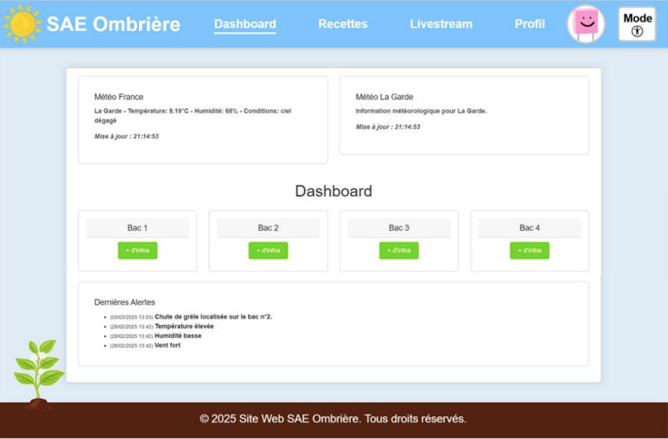
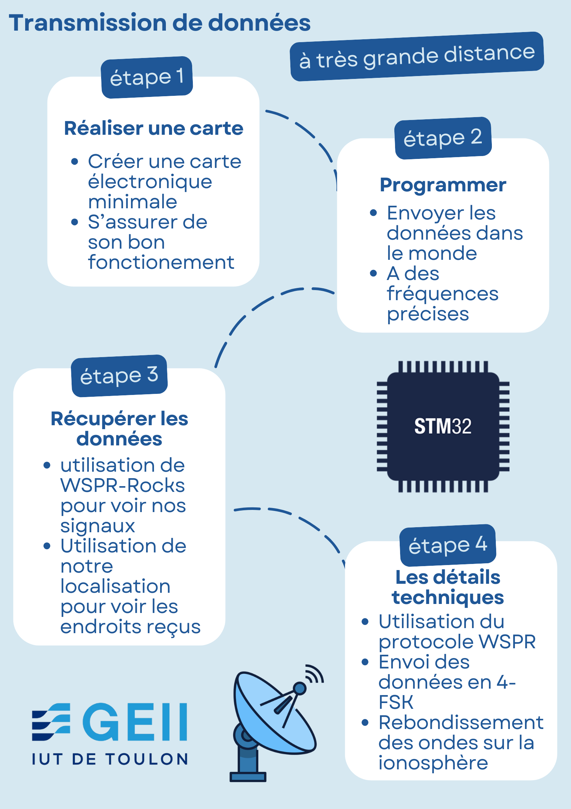
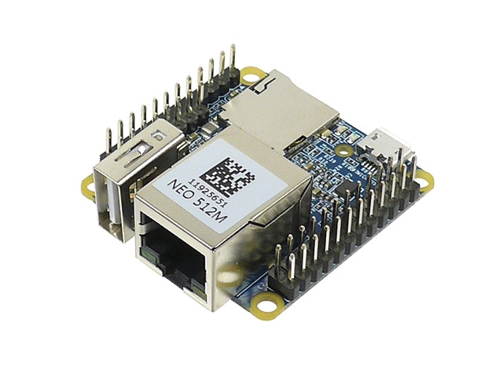
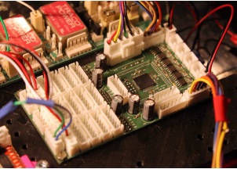

Optiplant

Transmetteur longue distance
Déambulateur intelligent

Nanopi Neo2

Optiplant est une interface web connectée à une base de données permettant de visualiser et gérer les paramètres d’une ombrière intelligente.

Application web simulant Google Street View, permettant de se déplacer dans des rues virtuelles.

Mise en place d’un système de téléphonie IP dans une PME avec gestion des appels et configuration réseau.

Site web personnel présentant mes projets, compétences et expériences professionnelles.